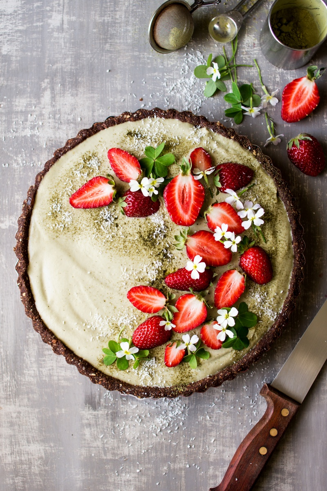

Matcha Strawberry Tart

Description
This tart makes for an impressive dessert,
yet its so easy to make! The base is a bit
like handling play dough! The two layers are
very simple too and you can make them even
simpler by using sliced raw strawberries
instead of a strawberry jelly layer. Your call!
Ingredients
Base
- 1 C dried dates, halved and pited
- 1 C almonds
- 1 C rolled oats
- 3 tbsp cacao powder
- 1/4 tsp fine sea salt
- 1 tbsp coconut oil
Strawberry Layer
- 1 1/2 C pureed strawberries (about 12-14 oz fresh strawberries)
- 3 tsp agar flakes (approx. 1 tsp agar powder)
Matcha Layer
- 3/4 C raw cashews, soaked overnight
- 1 1/2 C coconut cream
- 3 tsp Matcha powder
- 4-5 tbsp maple syrup
- 2 1/4 tsp agar flakes (or 3/4 tsp agar powder)
Decoration (optional)
- edible flowers
- coconut shavings
- fresh strawberries